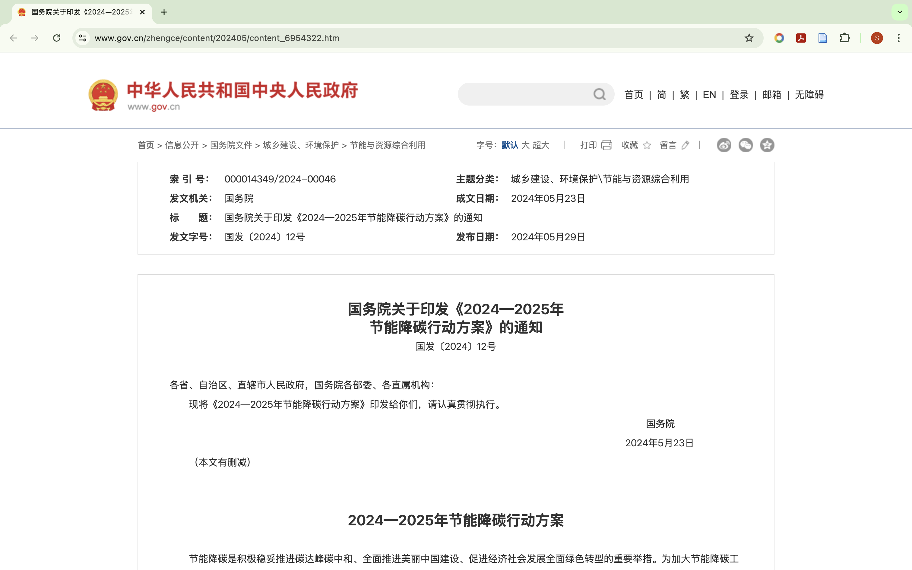

2020年9月22日，中国国家主席习近平在第七十五届联合国大会一般性辩论上宣布：“中国将提高国家自主贡献力度，采取更加有力的政策和措施，二氧化碳排放力争于2030年前达到峰值，努力争取2060年前实现碳中和。”中国碳达峰、碳中和目标（以下简称“双碳”目标）的提出，在国内国际社会引发关注。
那么，什么是碳中和碳达峰？简单来说，碳达峰是指，二氧化碳量在某一年达到峰值，之后进入下降阶段；碳中和是指一段时间内，特定的组织或者整个社会产生的二氧化碳，通过植树造林、海洋吸收、工程封存等自然或者人为手段被吸收和抵消掉，实现人类活动二氧化碳相对“零排放”。
国际上普遍认为，二氧化碳的过度排放是引起气候变化的主要原因，因此，全球各个国家也在努力实现能源及其产业化的低碳环保，定制实现碳中和的相关政策和时间表。实现“双碳目标”，对于整个地球和人类都有着重要的历史意义。
中国作为世界上一个大国，为实现此目标也在努力奋斗。近些年来，出台了许多相关的政策文件。如下图所示。在相关政策的指导下，各个地方政府也纷纷采取措施，包括一些企业也在响应政策做出努力。
比如，根据“碳达峰”“碳中和”行动方案，中国石化浙江石油积极开展光伏发电项目建设，充分利用占地面积大、周围无建筑物遮挡等优势，成功打造浙江省首座“碳中和”加油站——宁波奉化金海路加油站。近日，“中石化三官堂油库”获得了第三方专业机构颁发的碳中和证书，这标志着浙江省首座“碳中和”油库诞生。三官堂油库已建成分布式光伏发电系统，设有455WP光伏组件212块，装机总容量96.46千瓦，光伏板展开面积约470平方米。整个项目采用“自发自用、余电上网”模式，实现与国家电网之间无间断切换。据测算，该油库光伏发电项目预计年发电量可达11万千瓦时。以每种一棵树，一年可以吸收5至10公斤的碳排放量来折算，实现“碳中和”后的金海路加油站每年的碳减排量相当于种植459~918棵树。按照光伏电站理论寿命期25年进行测算，金海路加油站在全寿命周期内相当于种植了约2万棵树。
“双碳”目标的实现从来不是一蹴而就，是一个循序渐进的过程，需要全国人们乃至全世界的共同努力，通过大家的齐心协力，我们一定能够实现这个目标，将绿色发展之路走得更远更好。
| 部分双碳目标文件 | ||
| 时间 | 名称 | 部门 |
|---|---|---|
| 2024.05.29 | 《2024-2025年节能降碳行动方案》 | 国务院 |
| 2022.09.20 | 《能源碳达峰碳中和标准化提升行动方案》 | 国家能源局 |
| 2021.10.21 | 《“十四五”可再生能源发展规划》 | 国家发改委等九部门 |
| 2022.01.13 | 《关于完善能源绿色低碳转型体制机制和政策措施的意见》 | 国家发改委 国家能源局 |
| 2022.06.10 | 《减污降碳协同增效实施方案》 | 生态环境部等七部门 |
| 2021.10.18 | 《关于严格能效约束推动重点领域节能降碳的若干意见》 | 国家发改委等五部门 |
| 2021.10.24 | 《关于整准确全面贯彻新发展理念做好碳达峰碳中和工作的意见》 | 国务院 |
| 2021.10.27 | 《2030年前碳达峰行动方案》 | 国务院 |
| 2022.03.01 | 《“十四五”建筑节能与绿色建筑发展规划》 | 国务院 |
| 2022.06.30 | 《城乡建设领域碳达峰实施方案》 | 住建部、国家发改委 |
| 2022.01.18 | 《城乡建设领域碳达峰实施方案》 | 国务院 |